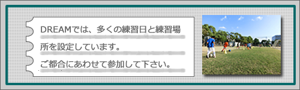
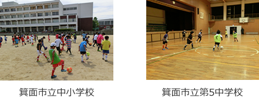
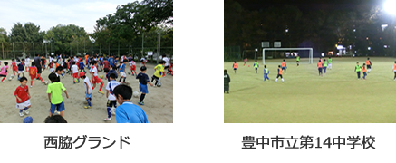

練習日・場所
注意事項
★印は希望者は参加できます。
●箕面二中、箕面五中は体育館ですのでフットサルシューズが必要です。
●箕面市立中小学校は12月・1月・2月は冬時間となり練習は17：00までとなります。
●土日祝は試合が入り、予定が変更になる事もあります。
●天候により練習が中止になったり、時間変更になる事があります。
＜体験をご希望の方へ＞
体験は随時、受け付けております。メール、FAX、電話でお申し込みの上、ご参加下さい。
持ち物（ボール、飲み物）、動きやすい服装、各グランドに適したシューズ
各練習会場での様子


周辺地図
駐車場
箕面市立中小学校：駐車場有
箕面市立第2中学校：駐車場有
箕面市立第5中学校：駐車場有
箕面市立第14中学校：駐車場有
西脇G：駐車場無し
杉谷公園: 近くにコインパーキング有
★路上駐車は厳禁です。気持ちよく活動を続けることが出来る様にご協力をお願いします。
★自転車で来られる方は、駐輪についても歩行者や自動車の迷惑にならない様お気を付け下さい。

中学1年生～3年生が活動しています。>>DREAM U-15のHP
トレセン在籍情報

豊能トレセン 13名

豊能トレセン 15名
DREAMの代表選手として活躍中。
過去の情報
スタッフ情報
DREAM OBの皆様！
スタッフ募集！！
審判・指導・引率等
詳細についてはご連絡下さい。